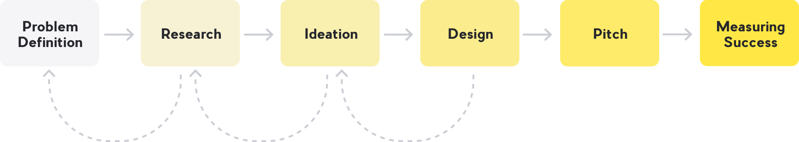
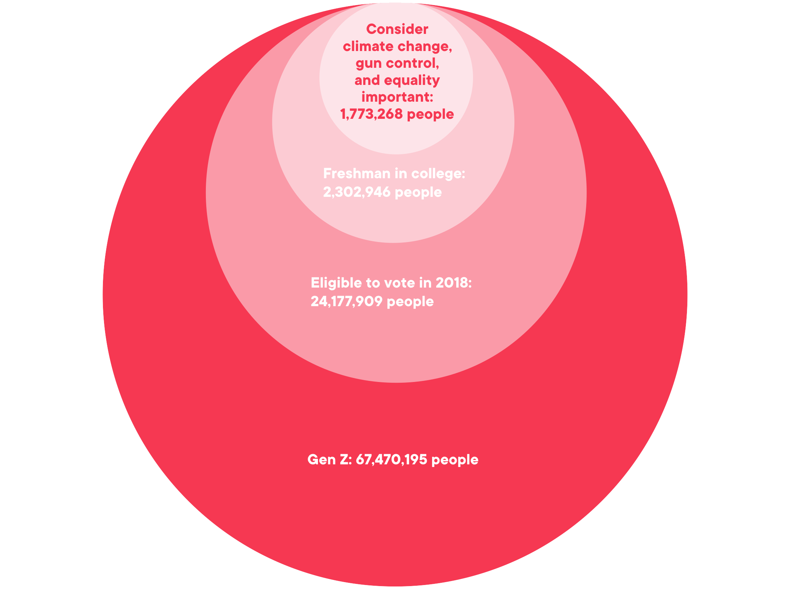
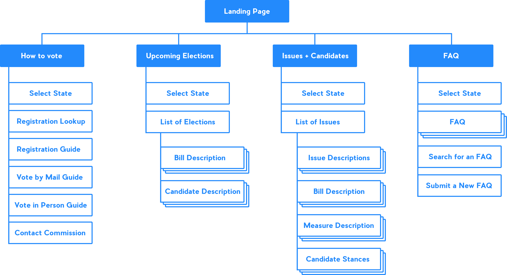
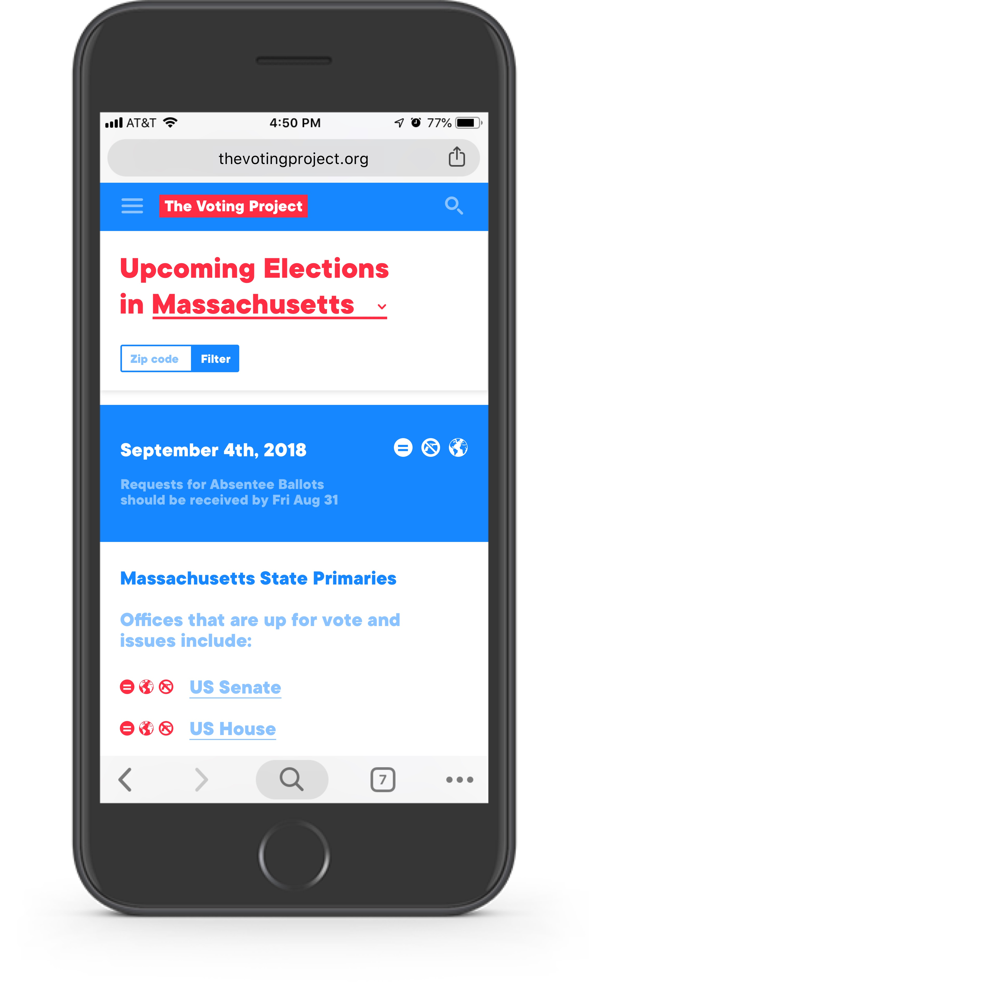

Background
Overview: I interned with the Experience Design Team at Digitas, a Digital Marketing Agency in Boston, during the summer of 2018. I spearheaded a case study with a team of interns, to create the Voting Project: an educative website and a marketing campaign that encourages members of Generation Z to vote on social issues like climate change, gun control and equality.
Tools: Sketch, Principle, Keynote, Illustrator, Photoshop, After Effects, Google Drive, pens and paper, whiteboards
Team:

Whitney: Data and Research

Brenna: Project Management


Sophia (me!): Experience Design, Campaign Strategy, and Creative Direction

Connor: Media Planning, Budgeting, and Music
Process Summary:
Problem Definition
Generation Z lacks access to information and tools for decision making and voting, even though they are passionate about social issues.
(This problem was defined based on our research and users described below.)
Strategy
Empower Gen Z with resources and information in the places they already search.
We are not interested in a marketing campaign that shouts about the importance of voting. Instead we give our target users information and tools to make the voting process more accessible. With this information they are empowered to make informed decisions.
Research
Who is Generation Z?
Research Methods: We read articles, studies and surveys on Generation Z and their voting trends as well as had infromal converstations with members of Generation Z.
Key Insights:
Voting information is often not in accessible formats or in media that Generation Z is familiar with using, such as youtube or websites. Here are examples of websites with content about elections in Massachusetts.


Generation Z often moves to new cities or states for university or jobs, and they are often not registered to vote in these new locales. Although all of Generation Z can vote on issues of climate change, gun control and equality, the local measures and candidates will be different depending on where they are registered to vote.
77%
consider climate change, gun control and equality important issues (NPR).
70%
watch 2+ hours of youtube every day (Forbes).
96%
own smartphones (Pew Research).
“I don’t know how (to vote) and I don’t really know how to find more info”
— California College student (CALPIRG Education Fund)
Users
Focusing on a subgroup
Generation Z has a huge population of 67 million Americans. While there is much variation in this group, we decided to focus on reaching the subgroup that find climate change, gun control and equality as most important.
Meet Taylor
As a Freshman in college, Taylor is an enthusiastic young adult. Taylor will vote for the first time in the Fall. Taylor is not super politically active (they don’t regularly post about political beliefs, organize political events or work for campaigns) but Taylor does care about issues of climate change, equality and gun violence. Taylor frequently use Instagram, Facebook and Youtube. The idea of mailing in a paper ballot seems very old fashioned.


Meet Sam
Sam, unlike Taylor, grew up in a different state than where they attend college. Sam and Taylor will both need information about the candidates and methods of voting for their different locations. It is important that information and tools are relevant and accessible for Gen Z users all over the US.
To answer an FAQ, yes, I drew these illustrations :-)
Empathy map for both Taylor and Sam.
Ideation

My team and I did a lot of brainstorming together and individually. We discussed and grouped our ideas based on similarities and themes.
After a lot of brainstorming and ideation, we decided that our campaign would have 3 main elements to best reach Taylor and Sam:
- An educational website
- A social media campaign
- Transportation partnerships to help students get to the polls
Website Process
Simple Information Architecture
Many iterations and problem solving
I made many iterations of layouts for each page. One challenge I encountered was how to allow a user to select their state in mobile. I wanted this process to be engaging and visual so I decided to show a map of the United States where the user could click to select their state. However, the full map of the US would be too small to fit on mobile. I solved this problem by first asking the user to select their region and then asking the user to select their state on a regional map (see below in the website section).
Website
Designing for trust
It is important to first show Taylor and Sam the website’s value, before asking for any information (such as the state they live in or their zip code). The user is first presented with a reassuring statement about the purpose of the website, and then prompted to select which section of the website interests them: How to vote, Upcoming Elections, Issues and Candidates.

How to Vote: This is a user flow for a user who wants more information on how to vote. The user most associates with Massachusetts, is registered to vote and is interested in learning more about voting by mail.


Issues and Candidates: Users can see issues and candidates that are up for election in their state. They can change the state at any time.
Upcoming Elections: Users can read about upcoming elections in their state or region. Each of the measures, bills or candidates that are up for vote are listed under the election date.
FAQ: Users can scroll through frequently asked questions, search for a question or submit a question that has not yet been answered.
Visual Language
Colors, Type, and UI: The content and visual language is friendly, enthusiastic, encouraging and patriotic, but not polarizing. I used a simple, bold graphic language to ensure that the content is reassuring and easily accessible. I used brand language from the pro bono client, but I cut down on the number of illustration styles, typefaces and colors. I made these decisions to create more consistency and to better reflect the brand voice of the client. I also created a UI style for the website.

Social Campaign
Youtube: Our deliverables include an educational YouTube channel where Taylor and Sam can learn how to vote, as well as, research on different measures and candidates that are coming up for vote.
I collaborated with my teammates Hayden, Ashley and Connor to produce the YouTube video “How to request an absentee ballot.” I did the Art Direction, storyboarding, illustration and typesetting. I delegated some of the illustration work to Ashley, Hayden did all of the animation, and Connor produced the music and recorded the voice over. It was awesome to work with this team and see everyone's work come together. Other video ideas for our YouTube channel include: “How to vote at a polling station,” “What to expect on a ballot,” and “Climate change bills in 2018.”
Facebook and Instagram: Our social media campaign also includes an Instagram page, Facebook page, sponsored Instagram ads, partnerships with popular influencers, blurbs in university newsletters and partnerships with college campus ambassadors.

Transportation
Partnerships: The Voting Project will partner with transportation companies to pay for the cost of transportation to the polls on Election Day. The companies will also use their social media and other advertising channels to promote The Voting Project. This enhances corporate social responsibility.

The Pitch
My team had the opportunity to pitch our work to a panel of senior Digitas executives and the client.
Budget
The client asked us to develop two media plans: one plan within a $50,000 budget and the other for an “unlimited” budget.

Conclusion
Measuring Success: Overall we estimate that our campaign has the potential to increase Gen Z voting in our target audience by 2-3%. That is 35,465 - 53,198 more votes! We can measure the success of our campaign by analyzing KPIs including how many people visit our website, how long they stay, the number of interactions, the number of views on our videos, and the number of interactions with our social media content.
Reflection: This project was a great learning experience and it was awesome to work with such a motivated team. I learned about researching and understanding users, working with an existing brand and applying it to new designs, like the website UI, as well as animation production and how to communicate to a production team. I also learned about other non-design aspects of marketing such as making media decisions based on data, budgeting and social media campaigns.